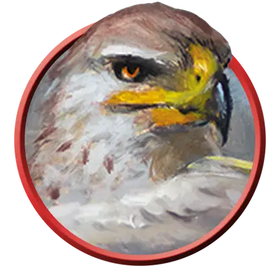

Ааракокра застрельщик
Aarakocra Skirmisher
Средний Элементаль, Нейтральный

Класс Защиты 12 Инициатива +2 (12)
Хиты 11 (2к8 + 2)
Скорость 20 футов, Полёта 50 футов
| мод | спас | ||
|---|---|---|---|
| СИЛ | 10 | +0 | +0 |
| ЛОВ | 14 | +2 | +2 |
| ТЕЛ | 12 | +1 | +1 |
| мод | спас | ||
|---|---|---|---|
| ИНТ | 11 | +0 | +0 |
| МДР | 12 | +1 | +1 |
| ХАР | 11 | +0 | +0 |
Чувства пассивное Восприятие 15
Языки Первичный (Ауран), Язык Ааракокра
Опасность 1/4 (50 опыта; БВ +2)
Действия
Когти. Бросок рукопашной атаки: +4, досягаемость 5 футов Попадание: 4 (1к4+2) Рубящего урона или 9 (3к4+2) Рубящего урона, если ааракокра переместился как минимум на 30 футов по прямой к цели непосредственно перед попаданием.
Пилум ветра. Бросок рукопашной или дальнобойной атаки: +4, досягаемость 5 футов или дистанция 30/120футов Попадание: 5 (1к6+2) Колющего урона плюс 2(1к4) урона Звуком. Промах или попадание: Пилум магическим образом возвращается в руку ааракокры сразу после совершения дальнобойной атаки.
Бонус мастерства +2
Среда обитания Горы, Стихийный план Воздуха
Сокровища Личные, Инструментальные
Ааракокра
Крылатые защитники неба
Ааракокра — похожий на птиц народ, который парит в небесах бесчисленных миров и бескрайних просторах Стихийного плана Воздуха. Внешне они обычно схожи с теми птицами, что распространены в тех краях, где обитают: некоторые напоминают ястребов или кондоров, другие же похожи на колибри или археоптериксов. Во многих землях ааракокра рассказывают о славных древних временах, когда они сражались с проклятой Королевой Хаоса бок о бок с таинственными Воздушными герцогами Ааки. **
**
Ааракокры- застрельщики искусны в борьбе с летающими в облаках врагами. Они часто атакуют цели на земле, совершая пикирующие удары.